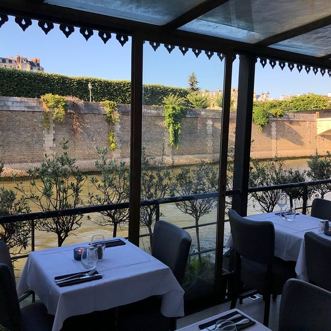
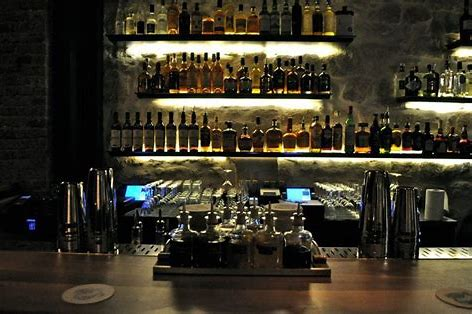
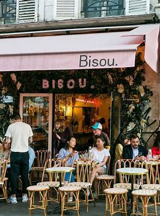
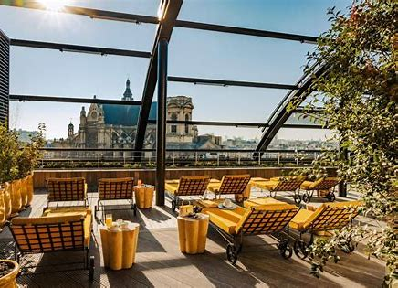

Paris is a city famous for its cafes and bars, offering a unique experience for Parisians and visitors alike. The city's cafes are often associated with Paris's intellectual and artistic culture, with their typical decor and atmosphere. The bars in the city are also numerous and varied, ranging from trendy neighborhood bars like Marais or Belleville to elegant cocktail bars on the Left Bank. Whether you are looking for a place to grab a morning coffee, a quick lunch, or an evening drink, you will find in Paris a wide variety of choices for all tastes and budgets. Parisian cafes and bars are must-visit places to experience the culture and unique atmosphere of the city.
Accueil| La Nouvelles Seine |
|  |
| La Nouvelle Seine is an iconic bar located in the historic heart of Paris, on the banks of the Seine river. The place offers a unique and convivial atmosphere for visitors, with stunning views of Notre-Dame Cathedral and the banks of the Seine. The bar is also famous for its underground theater, offering a varied program ranging from comedy to contemporary theater. La Nouvelle Seine is an ideal place to spend an evening with friends or as a couple, with its selection of creative cocktails and quality wines. Whether you are a theater enthusiast or simply looking for a trendy place to have a drink, La Nouvelle Seine is a safe choice for a successful evening in Paris. |
| Little Red Door |
|  |
| Little Red Door is an iconic cocktail bar located in the Marais district of Paris. This bar offers an elegant and sophisticated atmosphere with carefully crafted decor and a menu of creative and original cocktails. The drink menu is meticulously curated with fresh and high-quality ingredients, and the staff is expert in mixology. The bar also has a private space for groups and a bar-snack menu to accompany the cocktails. Little Red Door is a must-visit for cocktail lovers and visitors seeking an elegant spot for a night out with friends or a romantic evening. |
| Bisou |
|  |
| Café Bisou is a charming little café located in the Montmartre neighborhood of Paris. It's a comfortable and friendly place, with warm decor and a relaxed atmosphere. The café offers a selection of quality coffees, as well as fresh pastries and sandwiches made on site. The owners are warm and welcoming, making the experience even more enjoyable. Café Bisou is ideal for a quick coffee break or for a light meal. It's a popular meeting place for locals and visitors alike, who appreciate the friendly atmosphere and authentic character of this small neighborhood café. |
| Le perchoir de l'Est |
|
|
| The Perchoir de l'Est is a must-visit rooftop bar in Paris. Located in the 11th arrondissement, it offers breathtaking views of the city with a chic and trendy atmosphere. The place is perfect for enjoying a sunset over Paris while sipping on a creative cocktail or artisanal beer. The Perchoir de l'Est also offers a menu of sharing plates, ranging from charcuterie and cheese to more elaborate dishes, all prepared with high-quality ingredients. The music selection is carefully curated, adding an extra touch to the experience. It's an ideal place to spend a memorable evening with friends or a loved one. |
| Madame Rêve |
|  |
| Madame Rêve is a unique place in Paris, combining a café and a concept store. Located in the 11th arrondissement, it offers a warm and friendly atmosphere, with careful and creative decoration. The café offers a selection of quality coffees, as well as teas and fresh juices. The concept store, on the other hand, offers a carefully curated selection of products, ranging from stationery and books to jewelry and fashion accessories. The owners are passionate and experienced, ready to offer advice for choosing the perfect product or simply chatting with customers. The place is ideal for working, relaxing, or shopping, in a unique and inspiring atmosphere. |